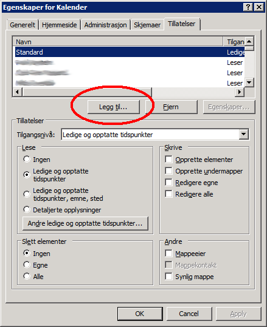
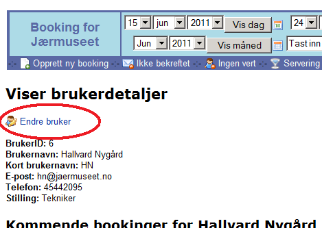

Hvordan la bookingsystemet legge inn bookinger i kalenderen min
1. I Outlook, trykk på kalender-ikonet:
2. Høyreklikk på "Kalender" (din kalender) og velg "Egenskaper":
3. Velg fana "Tillatelser":
4. Trykk på "Legg til":

5. Søk på "Booking sync". Velg "Booking Sync" i lista. Trykk "Legg til" slik at det kommer opp i ruta til høyre og klikk på "OK":
6. Velg "Booking Sync" i lista. Endre "Tilgangsnivå" til "Forfatter" og klikk på "OK".
7. Gå inn på bookingsystemet (http://booking.jaermuseet.local/) og trykk på navnet ditt oppe til høyre:
8. Velg "Endre bruker":

9. Endre til "Ja" og skriv inn din fulle epost-adresse (ikke den korte versjonen) og trykk på "Endre":
10. Gratulerer!
Du har nå satt opp synkronisering for deg. Innen 10 minutter, så er alle fremtidige bookinger de neste 2 årene synkronisert (0, 10, 20, osv minutter over kjører synkroniseringen). Hvis noe ikke ble gjort rett, så sier systemet i fra.